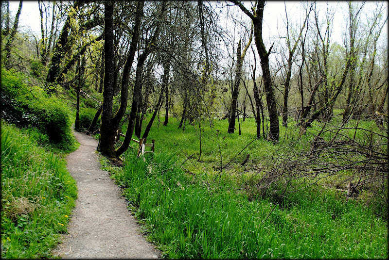

Oaks Bottom
The Oaks Bottom wetland, mainly fed by springs at the base of a Willamette River bluff, was rescued from its ignominious status as a landfill and soon-to-be industrial development in 1969 and has become one of Portland's most beloved wildlife parks. Unusually for a wildlife refuge, dogs are allowed here on leash, and the loop hike takes you along a small stretch of a major cycling trail, the Springwater Corridor.
Plan Your Trip
Trail Aspects:
- Exertion: Easy, 2.3 Miles Round Trip
- Sights: Sellwood wetlands, wildlife, wildflowers in the spring, access to the Willamette River
- Popularity: Moderate
- Open: All Year
Amenities:
- Bathrooms
- Bus Lines: 19, 70
Directions From Portland:
- Travel Time: Approximately 15 minutes (4.1 Miles from Portland)
- Get on Burnside heading E
- Take a right onto SE MLK Blvd
- Drive S on McLoughlin Blvd
- Take SE Milwalkie Ave to Ramona St
- Follow signs to your destination
